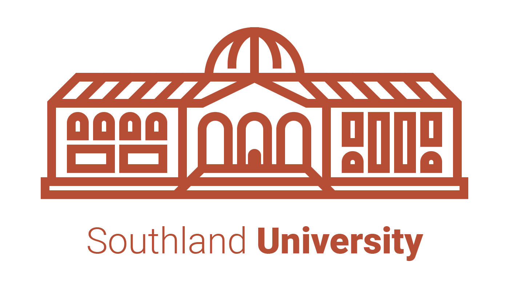

Southland University
Initial Ideas & Exploration
Southland U is a three-fold institution partering with Cincinnati Christian University, comprised of schools in Biblical Study, Ministry, and Leadership. Through these programs, students develop a stronger Biblical foundation and learn how to channel it towards more effective roles in God’s ongoing mission in Kentucky and around the globe.
The Building
This concept initially sprang from a desire to try something more unconventional with an institution’s visual branding. Gone are the crests and mottos, replaced by an actual building that expands with the school’s growth.
This sort of structure could be cobbled together from many of an assortment of typical architectural elements (columns, arches, domes, etc.), but I chose to limit it to a classic couple. 
The Shield
It had to be done. There is just too much tradition and instant connotation inherent in a university crest/seal. However, it’s been freshened, modernized, and abstracted to remove any stigma or cliché from the overall concept.
This shield is made of 4 elements, that fit nicely into 4 categories: the program as a whole, and the 3 individual schools.
So let’s take a look at the breakdown:
- Biblical Study echoes the shape of an open book being held in a hand.
- Ministry indicates a downward motion, or a “pouring out” of itself into those below it.
- Leadership crowns the shield, with a slightly distant sphere breaking what were previously rigid boundaries. It has separated itself from the other layers, yet still appears integrated.
The Shield can function on multiple visual levels, indicating its intent through chromatic and typographic references.
The Book
With the Bible as the foundation for everything we do at Southland, it makes perfect sense to focus on it as the identity for the University’s mission.
It’s also remarkably legible at small sizes...
...with room for additional embellishment at larger sizes.
Because of this mark’s simplicity, we wouldn’t want to dilute it with additional visual variations for the individual programs. This could just as esaily be achieved, through geometric and typographic shifts.

Thanks for reading!
If you have any further questions about form, color, type choices, or preferred Starfleet Captain, just let Noah Jacobus know.